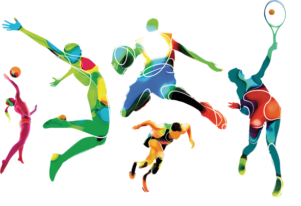

Спорт. Що таке спорт ? Як ви гадаєте ? Правильно. Спорт це організована за певними правилами діяльність людей, що полягає в зіставленні їх фізичних та інтелектуальних здібностей, а також підготовка до цієї діяльності та міжособові стосунки, що виникають в процесі гри. Спорт — це змагання за певними правилами та підготовка до цих змагань. Часто спорт служить розвагою для глядачів.
Зазвичай спортом є отримання морального і матеріального задоволення, прагнення до удосконалення і слави, покращення навичок.
Спорт ділиться на аматорський і професійний. Професійний спорт є важливою частиною індустрії розваг. За великими спортивними змаганнями спостерігають тисячі глядачів на трибунах стадіонів та спортивних залів і мільйони телеглядачів.
Бейсджампінг — стрибки-польоти з парашутом з висотних об'єктів - будівель (хмарочосів), башт, мостів, гірських скель тощо. Перші згадки о використанні парашутів датується XII століттям нашої ери:китайські акробати використовували маленький парашут, щоб підстраховувати падіння під час вистав...
Читати даліСучасний міський простір в силу коштовності землі весь час тягнеться до гори. Його природна вершина — дах, стає місцем перебування міських мешканців. Одні з них руфери — підкорювачі піднебесного простору. Вони здійснюють сходження на дахи високоповерхівок використовуючи не зовсім звичні засоби — стіни, пожежні сходи...
Читати даліCкелелазіння - це вид спорту й одночасно спосіб активного відпочинку, суть якого полягає у лазінні по природному (скелі) або штучного (скеледроми) рельєфу. Саме тому для занять скелелазінням не обов'язково їхати в гори, а досить відвідати найближчий скеледроми. Це самостійний вид спорту, який вийшов з альпінізму й нерозривно пов'язаний з ним...
Читати далі
Руфер Мустанг з України є одним з родоначальників цієї течії. Цей таємничий киянин викладає на сайті Mustang Wanted шокуюче відео зі своєю присутністю. Про нього відомо небагато: йому 25 років, ім'я - Григорій. За його словами, він працює «хуліганом»...
Читати далі
Дейв Мірра народився в 1974 році у місті Читтенанго (Chittenango), штат Нью-Йорк. В 11 років він захопився BMX і скоро отримав серед однолітків прізвисько "Miracle Boy". На невеликому байці з 20-дюймовими колесами юний райдер легко долав вуличні перешкоди, виконував захоплюючі трюки на саморобних рампах...
Читати далі


{kind=link}
{kind=link}
{kind=link}